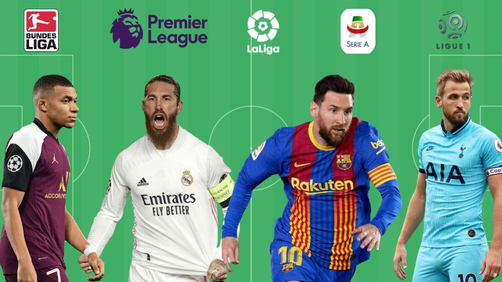
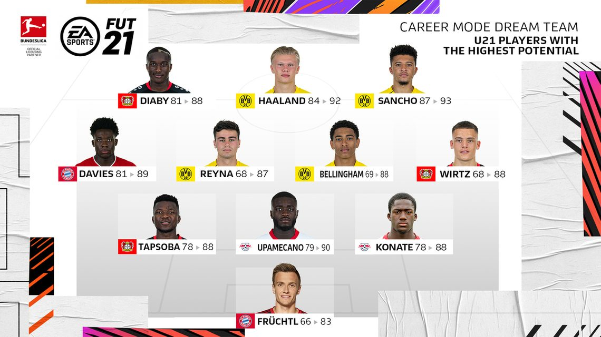

An insight to Football Team Manager's Secret Tactic to a successful Team.



How do managers create their ‘ideal’ team for the season? Managers are known to disrupt the team's dynamic from the previous managers efforts. Most come with their favourite players to the new team, especially during the transfer window. Where they pay +80 million for a single player to be in their team, a price that accounts for the total expenditure of a lower-end team's whole squad.
So the question is, whether there is a way of choosing a winning team based on player stats only and how they compare to every other player in their position. Team chemistry is absolutely EVERYTHING in a team’s success and winning chances, but can statistics and machine learning be a manager's secret weapon in creating a Championship team…

Machine Learning Model
Gradient boosting machines (GBMs) are an extremely popular machine learning algorithm that have proven successful across many domains and is one of the leading methods for winning Kaggle competitions. Whereas random forests build an ensemble of deep independent trees, GBMs build an ensemble of shallow trees in sequence with each tree learning and improving on the previous one. Although shallow trees by themselves are rather weak predictive models, they can be “boosted” to produce a powerful “committee” that, when appropriately tuned, is often hard to beat with other algorithms.
There were two machine learning models utilised both with high accuracy percentage, above 95%. (shown in the GitHub represitory).